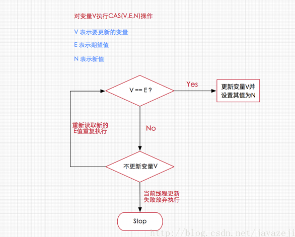
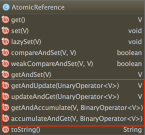
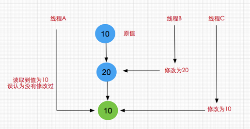

有锁并发的典型代表synchronized关键字，通过该关键字可以控制并发执行过程中有且只有一个线程可以访问共享资源，其原理是通过当前线程持有当前对象锁，从而拥有访问权限，而其他没有持有当前对象锁的线程无法拥有访问权限，也就保证了线程安全。但在本篇中，我们将会详聊另外一种反向而行的并发策略，即无锁并发，即不加锁也能保证并发执行的安全性。
本篇的思路是先阐明无锁执行者CAS的核心算法原理然后分析Java执行CAS的实践者Unsafe类，该类中的方法都是native修饰的，因此我们会以说明方法作用为主介绍Unsafe类，最后再介绍并发包中的Atomic系统使用CAS原理实现的并发类。
无锁的概念
在谈论无锁概念时，总会关联起乐观派与悲观派，对于乐观派而言，他们认为事情总会往好的方向发展，总是认为坏的情况发生的概率特别小，可以无所顾忌地做事，但对于悲观派而已，他们总会认为发展事态如果不及时控制，以后就无法挽回了，即使无法挽回的局面几乎不可能发生。这两种派系映射到并发编程中就如同加锁与无锁的策略，即加锁是一种悲观策略，无锁是一种乐观策略，因为对于加锁的并发程序来说，它们总是认为每次访问共享资源时总会发生冲突，因此必须对每一次数据操作实施加锁策略。而无锁则总是假设对共享资源的访问没有冲突，线程可以不停执行，无需加锁，无需等待，一旦发现冲突，无锁策略则采用一种称为CAS的技术来保证线程执行的安全性，这项CAS技术就是无锁策略实现的关键，下面我们进一步了解CAS技术的奇妙之处。
无锁的执行者-CAS
CAS
CAS的全称是Compare And Swap 即比较交换，其算法核心思想如下
执行函数：CAS(V,E,N)
其包含3个参数
- V表示要更新的变量
- E表示预期值
- N表示新值
如果V值等于E值，则将V的值设为N。若V值和E值不同，则说明已经有其他线程做了更新，则当前线程什么都不做。通俗的理解就是CAS操作需要我们提供一个期望值，当期望值与当前线程的变量值相同时，说明还没线程修改该值，当前线程可以进行修改，也就是执行CAS操作，但如果期望值与当前线程不符，则说明该值已被其他线程修改，此时不执行更新操作，但可以选择重新读取该变量再尝试再次修改该变量，也可以放弃操作，原理图如下

由于CAS操作属于乐观派，它总认为自己可以成功完成操作，当多个线程同时使用CAS操作一个变量时，只有一个会胜出，并成功更新，其余均会失败，但失败的线程并不会被挂起，仅是被告知失败，并且允许再次尝试，当然也允许失败的线程放弃操作，这点从图中也可以看出来。基于这样的原理，CAS操作即使没有锁，同样知道其他线程对共享资源操作影响，并执行相应的处理措施。同时从这点也可以看出，由于无锁操作中没有锁的存在，因此不可能出现死锁的情况，也就是说无锁操作天生免疫死锁。
CPU指令对CAS的支持
或许我们可能会有这样的疑问，假设存在多个线程执行CAS操作并且CAS的步骤很多，有没有可能在判断V和E相同后，正要赋值时，切换了线程，更改了值。造成了数据不一致呢？答案是否定的，因为CAS是一种系统原语，原语属于操作系统用语范畴，是由若干条指令组成的，用于完成某个功能的一个过程，并且原语的执行必须是连续的，在执行过程中不允许被中断，也就是说CAS是一条CPU的原子指令，不会造成所谓的数据不一致问题。
鲜为人知的指针: Unsafe类
Unsafe类存在于sun.misc包中，其内部方法操作可以像C的指针一样直接操作内存，单从名称看来就可以知道该类是非安全的，毕竟Unsafe拥有着类似于C的指针操作，因此总是不应该首先使用Unsafe类，Java官方也不建议直接使用的Unsafe类，据说Oracle正在计划从Java 9中去掉Unsafe类，但我们还是很有必要了解该类，因为Java中CAS操作的执行依赖于Unsafe类的方法，注意Unsafe类中的所有方法都是native修饰的，也就是说Unsafe类中的方法都直接调用操作系统底层资源执行相应任务，关于Unsafe类的主要功能点如下：
内存管理，Unsafe类中存在直接操作内存的方法
//分配内存指定大小的内存 public native long allocateMemory(long bytes); //根据给定的内存地址address设置重新分配指定大小的内存 public native long reallocateMemory(long address, long bytes); //用于释放allocateMemory和reallocateMemory申请的内存 public native void freeMemory(long address); //将指定对象的给定offset偏移量内存块中的所有字节设置为固定值 public native void setMemory(Object o, long offset, long bytes, byte value); //设置给定内存地址的值 public native void putAddress(long address, long x); //获取指定内存地址的值 public native long getAddress(long address); //设置给定内存地址的long值 public native void putLong(long address, long x); //获取指定内存地址的long值 public native long getLong(long address); //设置或获取指定内存的byte值 public native byte getByte(long address); public native void putByte(long address, byte x); //其他基本数据类型(long,char,float,double,short等)的操作与putByte及getByte相同 //操作系统的内存页大小 public native int pageSize();提供实例对象新途径
//传入一个对象的class并创建该实例对象，但不会调用构造方法 public native Object allocateInstance(Class cls) throws InstantiationException;类和实例对象以及变量的操作
//获取字段f在实例对象中的偏移量 public native long objectFieldOffset(Field f); //静态属性的偏移量，用于在对应的Class对象中读写静态属性 public native long staticFieldOffset(Field f); //返回值就是f.getDeclaringClass() public native Object staticFieldBase(Field f);
//获得给定对象偏移量上的int值，所谓的偏移量可以简单理解为指针指向该变量的内存地址，
//通过偏移量便可得到该对象的变量，进行各种操作
public native int getInt(Object o, long offset);
//设置给定对象上偏移量的int值
public native void putInt(Object o, long offset, int x);
//获得给定对象偏移量上的引用类型的值
public native Object getObject(Object o, long offset);
//设置给定对象偏移量上的引用类型的值
public native void putObject(Object o, long offset, Object x);
//其他基本数据类型(long,char,byte,float,double)的操作与getInthe及putInt相同
//设置给定对象的int值，使用volatile语义，即设置后立马更新到内存对其他线程可见
public native void putIntVolatile(Object o, long offset, int x);
//获得给定对象的指定偏移量offset的int值，使用volatile语义，总能获取到最新的int值。
public native int getIntVolatile(Object o, long offset);
//其他基本数据类型(long,char,byte,float,double)的操作与putIntVolatile及getIntVolatile相同，引用类型putObjectVolatile也一样。
//与putIntVolatile一样，但要求被操作字段必须有volatile修饰
public native void putOrderedInt(Object o,long offset,int x);
下面通过一个简单的Demo来演示上述的一些方法以便加深对Unsafe类的理解
```JAVA
public class UnSafeDemo {
public static void main(String[] args) throws NoSuchFieldException, IllegalAccessException, InstantiationException {
// 通过反射得到theUnsafe对应的Field对象
Field field = Unsafe.class.getDeclaredField("theUnsafe");
// 设置该Field为可访问
field.setAccessible(true);
// 通过Field得到该Field对应的具体对象，传入null是因为该Field为static的
Unsafe unsafe = (Unsafe) field.get(null);
System.out.println(unsafe);
//通过allocateInstance直接创建对象
User user = (User) unsafe.allocateInstance(User.class);
Class userClass = user.getClass();
Field name = userClass.getDeclaredField("name");
Field age = userClass.getDeclaredField("age");
Field id = userClass.getDeclaredField("id");
//获取实例变量name和age在对象内存中的偏移量并设置值
unsafe.putInt(user,unsafe.objectFieldOffset(age),18);
unsafe.putObject(user,unsafe.objectFieldOffset(name),"android TV");
// 这里返回 User.class，
Object staticBase = unsafe.staticFieldBase(id);
System.out.println("staticBase:"+staticBase);
//获取静态变量id的偏移量staticOffset
long staticOffset = unsafe.staticFieldOffset(userClass.getDeclaredField("id"));
//获取静态变量的值
System.out.println("设置前的ID:"+unsafe.getObject(staticBase,staticOffset));
//设置值
unsafe.putObject(staticBase,staticOffset,"SSSSSSSS");
//获取静态变量的值
System.out.println("设置前的ID:"+unsafe.getObject(staticBase,staticOffset));
//输出USER
System.out.println("输出USER:"+user.toString());
long data = 1000;
byte size = 1;//单位字节
//调用allocateMemory分配内存,并获取内存地址memoryAddress
long memoryAddress = unsafe.allocateMemory(size);
//直接往内存写入数据
unsafe.putAddress(memoryAddress, data);
//获取指定内存地址的数据
long addrData=unsafe.getAddress(memoryAddress);
System.out.println("addrData:"+addrData);
/**
* 输出结果:
sun.misc.Unsafe@6f94fa3e
staticBase:class geym.conc.ch4.atomic.User
设置前的ID:USER_ID
设置前的ID:SSSSSSSS
输出USER:User{name='android TV', age=18', id=SSSSSSSS'}
addrData:1000
*/
}
}
class User{
public User(){
System.out.println("user 构造方法被调用");
}
private String name;
private int age;
private static String id="USER_ID";
@Override
public String toString() {
return "User{" +
"name='" + name + '\'' +
", age=" + age +'\'' +
", id=" + id +'\'' +
'}';
}
}虽然在Unsafe类中存在getUnsafe()方法，但该方法只提供给高级的Bootstrap类加载器使用，普通用户调用将抛出异常，所以我们在Demo中使用了反射技术获取了Unsafe实例对象并进行相关操作。
public static Unsafe getUnsafe() {
Class cc = sun.reflect.Reflection.getCallerClass(2);
if (cc.getClassLoader() != null)
throw new SecurityException("Unsafe");
return theUnsafe;
}数组操作
//获取数组第一个元素的偏移地址 public native int arrayBaseOffset(Class arrayClass); //数组中一个元素占据的内存空间,arrayBaseOffset与arrayIndexScale配合使用，可定位数组中每个元素在内存中的位置 public native int arrayIndexScale(Class arrayClass);CAS 操作相关
CAS是一些CPU直接支持的指令，也就是我们前面分析的无锁操作，在Java中无锁操作CAS基于以下3个方法实现，在稍后讲解Atomic系列内部方法是基于下述方法的实现的。
//第一个参数o为给定对象，offset为对象内存的偏移量，通过这个偏移量迅速定位字段并设置或获取该字段的值， //expected表示期望值，x表示要设置的值，下面3个方法都通过CAS原子指令执行操作。 public final native boolean compareAndSwapObject(Object o, long offset,Object expected, Object x); public final native boolean compareAndSwapInt(Object o, long offset,int expected,int x); public final native boolean compareAndSwapLong(Object o, long offset,long expected,long x);这里还需介绍Unsafe类中JDK 1.8新增的几个方法，它们的实现是基于上述的CAS方法，如下
//1.8新增，给定对象o，根据获取内存偏移量指向的字段，将其增加delta， //这是一个CAS操作过程，直到设置成功方能退出循环，返回旧值 public final int getAndAddInt(Object o, long offset, int delta) { int v; do { //获取内存中最新值 v = getIntVolatile(o, offset); //通过CAS操作 } while (!compareAndSwapInt(o, offset, v, v + delta)); return v; } //1.8新增，方法作用同上，只不过这里操作的long类型数据 public final long getAndAddLong(Object o, long offset, long delta) { long v; do { v = getLongVolatile(o, offset); } while (!compareAndSwapLong(o, offset, v, v + delta)); return v; } //1.8新增，给定对象o，根据获取内存偏移量对于字段，将其 设置为新值newValue， //这是一个CAS操作过程，直到设置成功方能退出循环，返回旧值 public final int getAndSetInt(Object o, long offset, int newValue) { int v; do { v = getIntVolatile(o, offset); } while (!compareAndSwapInt(o, offset, v, newValue)); return v; } // 1.8新增，同上，操作的是long类型 public final long getAndSetLong(Object o, long offset, long newValue) { long v; do { v = getLongVolatile(o, offset); } while (!compareAndSwapLong(o, offset, v, newValue)); return v; } //1.8新增，同上，操作的是引用类型数据 public final Object getAndSetObject(Object o, long offset, Object newValue) { Object v; do { v = getObjectVolatile(o, offset); } while (!compareAndSwapObject(o, offset, v, newValue)); return v; }挂起与恢复
将一个线程进行挂起是通过park方法实现的，调用 park后，线程将一直阻塞直到超时或者中断等条件出现。unpark可以终止一个挂起的线程，使其恢复正常。Java对线程的挂起操作被封装在 LockSupport类中，LockSupport类中有各种版本pack方法，其底层实现最终还是使用Unsafe.park()方法和Unsafe.unpark()方法
//线程调用该方法，线程将一直阻塞直到超时，或者是中断条件出现。 public native void park(boolean isAbsolute, long time); //终止挂起的线程，恢复正常.java.util.concurrent包中挂起操作都是在LockSupport类实现的，其底层正是使用这两个方法， public native void unpark(Object thread);内存屏障
这里主要包括了loadFence、storeFence、fullFence等方法，这些方法是在Java 8新引入的，用于定义内存屏障，避免代码重排序，与Java内存模型相关。
//在该方法之前的所有读操作，一定在load屏障之前执行完成 public native void loadFence(); //在该方法之前的所有写操作，一定在store屏障之前执行完成 public native void storeFence(); //在该方法之前的所有读写操作，一定在full屏障之前执行完成，这个内存屏障相当于上面两个的合体功能 public native void fullFence();其他操作
//获取持有锁，已不建议使用 @Deprecated public native void monitorEnter(Object var1); //释放锁，已不建议使用 @Deprecated public native void monitorExit(Object var1); //尝试获取锁，已不建议使用 @Deprecated public native boolean tryMonitorEnter(Object var1); //获取本机内存的页数，这个值永远都是2的幂次方 public native int pageSize(); //告诉虚拟机定义了一个没有安全检查的类，默认情况下这个类加载器和保护域来着调用者类 public native Class defineClass(String name, byte[] b, int off, int len, ClassLoader loader, ProtectionDomain protectionDomain); //加载一个匿名类 public native Class defineAnonymousClass(Class hostClass, byte[] data, Object[] cpPatches); //判断是否需要加载一个类 public native boolean shouldBeInitialized(Class<?> c); //确保类一定被加载 public native void ensureClassInitialized(Class<?> c)
并发包中的原子操作类(Atomic系列)
通过前面的分析我们已基本理解了无锁CAS的原理并对Java中的指针类Unsafe类有了比较全面的认识，下面进一步分析CAS在Java中的应用，即并发包中的原子操作类(Atomic系列)，从JDK 1.5开始提供了java.util.concurrent.atomic包，在该包中提供了许多基于CAS实现的原子操作类，用法方便，性能高效，主要分以下4种类型。
原子更新基本类型
原子更新基本类型主要包括3个类：
- AtomicBoolean：原子更新布尔类型
- AtomicInteger：原子更新整型
- AtomicLong：原子更新长整型
这3个类的实现原理和使用方式几乎是一样的，这里我们以AtomicInteger为例进行分析，AtomicInteger主要是针对int类型的数据执行原子操作，它提供了原子自增方法、原子自减方法以及原子赋值方法等，鉴于AtomicInteger的源码不多，我们直接看源码
public class AtomicInteger extends Number implements java.io.Serializable {
private static final long serialVersionUID = 6214790243416807050L;
// 获取指针类Unsafe
private static final Unsafe unsafe = Unsafe.getUnsafe();
//下述变量value在AtomicInteger实例对象内的内存偏移量
private static final long valueOffset;
static {
try {
//通过unsafe类的objectFieldOffset()方法，获取value变量在对象内存中的偏移
//通过该偏移量valueOffset，unsafe类的内部方法可以获取到变量value对其进行取值或赋值操作
valueOffset = unsafe.objectFieldOffset
(AtomicInteger.class.getDeclaredField("value"));
} catch (Exception ex) { throw new Error(ex); }
}
//当前AtomicInteger封装的int变量value
private volatile int value;
public AtomicInteger(int initialValue) {
value = initialValue;
}
public AtomicInteger() {
}
//获取当前最新值，
public final int get() {
return value;
}
//设置当前值，具备volatile效果，方法用final修饰是为了更进一步的保证线程安全。
public final void set(int newValue) {
value = newValue;
}
//最终会设置成newValue，使用该方法后可能导致其他线程在之后的一小段时间内可以获取到旧值，有点类似于延迟加载
public final void lazySet(int newValue) {
unsafe.putOrderedInt(this, valueOffset, newValue);
}
//设置新值并获取旧值，底层调用的是CAS操作即unsafe.compareAndSwapInt()方法
public final int getAndSet(int newValue) {
return unsafe.getAndSetInt(this, valueOffset, newValue);
}
//如果当前值为expect，则设置为update(当前值指的是value变量)
public final boolean compareAndSet(int expect, int update) {
return unsafe.compareAndSwapInt(this, valueOffset, expect, update);
}
//当前值加1返回旧值，底层CAS操作
public final int getAndIncrement() {
return unsafe.getAndAddInt(this, valueOffset, 1);
}
//当前值减1，返回旧值，底层CAS操作
public final int getAndDecrement() {
return unsafe.getAndAddInt(this, valueOffset, -1);
}
//当前值增加delta，返回旧值，底层CAS操作
public final int getAndAdd(int delta) {
return unsafe.getAndAddInt(this, valueOffset, delta);
}
//当前值加1，返回新值，底层CAS操作
public final int incrementAndGet() {
return unsafe.getAndAddInt(this, valueOffset, 1) + 1;
}
//当前值减1，返回新值，底层CAS操作
public final int decrementAndGet() {
return unsafe.getAndAddInt(this, valueOffset, -1) - 1;
}
//当前值增加delta，返回新值，底层CAS操作
public final int addAndGet(int delta) {
return unsafe.getAndAddInt(this, valueOffset, delta) + delta;
}
//省略一些不常用的方法....
}通过上述的分析，可以发现AtomicInteger原子类的内部几乎是基于前面分析过Unsafe类中的CAS相关操作的方法实现的，这也同时证明AtomicInteger是基于无锁实现的，这里重点分析自增操作实现过程，其他方法自增实现原理一样。
//当前值加1，返回新值，底层CAS操作
public final int incrementAndGet() {
return unsafe.getAndAddInt(this, valueOffset, 1) + 1;
}我们发现AtomicInteger类中所有自增或自减的方法都间接调用Unsafe类中的getAndAddInt()方法实现了CAS操作，从而保证了线程安全，关于getAndAddInt其实前面已分析过，它是Unsafe类中1.8新增的方法，源码如下
//Unsafe类中的getAndAddInt方法
public final int getAndAddInt(Object o, long offset, int delta) {
int v;
do {
v = getIntVolatile(o, offset);
} while (!compareAndSwapInt(o, offset, v, v + delta));
return v;
}可看出getAndAddInt通过一个while循环不断的重试更新要设置的值，直到成功为止，调用的是Unsafe类中的compareAndSwapInt方法，是一个CAS操作方法。这里需要注意的是，上述源码分析是基于JDK1.8的，如果是1.8之前的方法，AtomicInteger源码实现有所不同，是基于for死循环的，如下
//JDK 1.7的源码，由for的死循环实现，并且直接在AtomicInteger实现该方法，
//JDK1.8后，该方法实现已移动到Unsafe类中，直接调用getAndAddInt方法即可
public final int incrementAndGet() {
for (;;) {
int current = get();
int next = current + 1;
if (compareAndSet(current, next))
return next;
}
}ok~,下面简单看个Demo，感受一下AtomicInteger使用方式
import java.util.concurrent.atomic.AtomicInteger;
public class AtomicIntegerDemo {
//创建AtomicInteger,用于自增操作
static AtomicInteger i=new AtomicInteger();
public static class AddThread implements Runnable{
@Override
public void run(){
for(int k=0;k<10000;k++) {
System.out.println(i.incrementAndGet());
}
}
}
public static void main(String[] args) throws InterruptedException {
Thread[] ts=new Thread[10];
//开启10条线程同时执行i的自增操作
for(int k=0;k<10;k++){
ts[k]=new Thread(new AddThread());
}
//启动线程
for(int k=0;k<10;k++){ts[k].start();}
for(int k=0;k<10;k++){ts[k].join();}
}
}在Demo中，使用原子类型AtomicInteger替换普通int类型执行自增的原子操作，保证了线程安全。至于AtomicBoolean和AtomicLong的使用方式以及实现原理是一样，大家可以自行查阅源码。
原子更新引用
原子更新引用类型可以同时更新引用类型，这里主要分析一下AtomicReference原子类，即原子更新引用类型。先看看其使用方式，如下
public class AtomicReferenceDemo2 {
public static AtomicReference<User> atomicUserRef = new AtomicReference<User>();
public static void main(String[] args) {
User user = new User("zhangkx", 18);
atomicUserRef.set(user);
User updateUser = new User("zhax", 25);
atomicUserRef.compareAndSet(user, updateUser);
//执行结果:User{name='zhanx', age=25}
System.out.println(atomicUserRef.get().toString());
}
static class User {
public String name;
private int age;
public User(String name, int age) {
this.name = name;
this.age = age;
}
public String getName() {
return name;
}
@Override
public String toString() {
return "User{" +
"name='" + name + '\'' +
", age=" + age +
'}';
}
}
}那么AtomicReference原子类内部是如何实现CAS操作的呢？
public class AtomicReference<V> implements java.io.Serializable {
private static final Unsafe unsafe = Unsafe.getUnsafe();
private static final long valueOffset;
static {
try {
valueOffset = unsafe.objectFieldOffset
(AtomicReference.class.getDeclaredField("value"));
} catch (Exception ex) { throw new Error(ex); }
}
//内部变量value，Unsafe类通过valueOffset内存偏移量即可获取该变量
private volatile V value;
//CAS方法，间接调用unsafe.compareAndSwapObject(),它是一个
//实现了CAS操作的native方法
public final boolean compareAndSet(V expect, V update) {
return unsafe.compareAndSwapObject(this, valueOffset, expect, update);
}
//设置并获取旧值
public final V getAndSet(V newValue) {
return (V)unsafe.getAndSetObject(this, valueOffset, newValue);
}
//省略其他代码......
}
//Unsafe类中的getAndSetObject方法，实际调用还是CAS操作
public final Object getAndSetObject(Object o, long offset, Object newValue) {
Object v;
do {
v = getObjectVolatile(o, offset);
} while (!compareAndSwapObject(o, offset, v, newValue));
return v;
}从源码看来，AtomicReference与AtomicInteger的实现原理基本是一样的，最终执行的还是Unsafe类，关于AtomicReference的其他方法也是一样的，如下

红框内的方法是Java8新增的，可以基于Lambda表达式对传递进来的期望值或要更新的值进行其他操作后再进行CAS操作，说白了就是对期望值或要更新的值进行额外修改后再执行CAS更新，在所有的Atomic原子类中几乎都存在这几个方法。
原子更新数组
子更新数组指的是通过原子的方式更新数组里的某个元素，主要有以下3个类
- AtomicIntegerArray：原子更新整数数组里的元素
- AtomicLongArray：原子更新长整数数组里的元素
- AtomicReferenceArray：原子更新引用类型数组里的元素
这里以AtomicIntegerArray为例进行分析，其余两个使用方式和实现原理基本一样，简单案例如下，
public class AtomicIntegerArrayDemo {
static AtomicIntegerArray arr = new AtomicIntegerArray(10);
public static class AddThread implements Runnable{
public void run(){
for(int k=0;k<10000;k++)
//执行数组中元素自增操作,参数为index,即数组下标
arr.getAndIncrement(k%arr.length());
}
}
public static void main(String[] args) throws InterruptedException {
Thread[] ts=new Thread[10];
//创建10条线程
for(int k=0;k<10;k++){
ts[k]=new Thread(new AddThread());
}
//启动10条线程
for(int k=0;k<10;k++){ts[k].start();}
for(int k=0;k<10;k++){ts[k].join();}
//执行结果
//[10000, 10000, 10000, 10000, 10000, 10000, 10000, 10000, 10000, 10000]
System.out.println(arr);
}
}启动10条线程对数组中的元素进行自增操作，执行结果符合预期。使用方式比较简单，接着看看AtomicIntegerArray内部是如何实现，先看看部分源码
public class AtomicIntegerArray implements java.io.Serializable {
//获取unsafe类的实例对象
private static final Unsafe unsafe = Unsafe.getUnsafe();
//获取数组的第一个元素内存起始地址
private static final int base = unsafe.arrayBaseOffset(int[].class);
private static final int shift;
//内部数组
private final int[] array;
static {
//获取数组中一个元素占据的内存空间
int scale = unsafe.arrayIndexScale(int[].class);
//判断是否为2的次幂，一般为2的次幂否则抛异常
if ((scale & (scale - 1)) != 0)
throw new Error("data type scale not a power of two");
//
shift = 31 - Integer.numberOfLeadingZeros(scale);
}
private long checkedByteOffset(int i) {
if (i < 0 || i >= array.length)
throw new IndexOutOfBoundsException("index " + i);
return byteOffset(i);
}
//计算数组中每个元素的的内存地址
private static long byteOffset(int i) {
return ((long) i << shift) + base;
}
//省略其他代码......
}通过前面对Unsafe类的分析，我们知道arrayBaseOffset方法可以获取数组的第一个元素起始地址，而arrayIndexScale方法可以获取每个数组元素占用的内存空间，由于这里是Int类型，而Java中一个int类型占用4个字节，也就是scale的值为4，那么如何根据数组下标值计算每个元素的内存地址呢？显然应该是
每个数组元素的内存地址=起始地址+元素下标 * 每个元素所占用的内存空间
与该方法原理相同
//计算数组中每个元素的的内存地址
private static long byteOffset(int i) {
return ((long) i << shift) + base;
}这是为什么，首先来计算出shift的值
shift = 31 - Integer.numberOfLeadingZeros(scale);其中Integer.numberOfLeadingZeros(scale)是计算出scale的前导零个数(必须是连续的)，scale=4，转成二进制为00000000 00000000 00000000 00000100即前导零数为29，也就是shift=2，然后利用shift来定位数组中的内存位置，在数组不越界时，计算出前3个数组元素内存地址
//第一个数组元素，index=0 ， 其中base为起始地址，4代表int类型占用的字节数
address = base + 0 * 4 即address= base + 0 << 2
//第二个数组元素，index=1
address = base + 1 * 4 即address= base + 1 << 2
//第三个数组元素，index=2
address = base + 2 * 4 即address= base + 2 << 2
//........显然shift=2，替换去就是
address= base + i << shift这就是 byteOffset(int i) 方法的计算原理。因此byteOffset(int)方法可以根据数组下标计算出每个元素的内存地址。至于其他方法就比较简单了，都是间接调用Unsafe类的CAS原子操作方法，如下简单看其中几个常用方法
//执行自增操作，返回旧值，i是指数组元素下标
public final int getAndIncrement(int i) {
return getAndAdd(i, 1);
}
//指定下标元素执行自增操作，并返回新值
public final int incrementAndGet(int i) {
return getAndAdd(i, 1) + 1;
}
//指定下标元素执行自减操作，并返回新值
public final int decrementAndGet(int i) {
return getAndAdd(i, -1) - 1;
}
//间接调用unsafe.getAndAddInt()方法
public final int getAndAdd(int i, int delta) {
return unsafe.getAndAddInt(array, checkedByteOffset(i), delta);
}
//Unsafe类中的getAndAddInt方法，执行CAS操作
public final int getAndAddInt(Object o, long offset, int delta) {
int v;
do {
v = getIntVolatile(o, offset);
} while (!compareAndSwapInt(o, offset, v, v + delta));
return v;
}至于AtomicLongArray和AtomicReferenceArray原子类，使用方式和实现原理基本一样。
原子更新属性
如果我们只需要某个类里的某个字段，也就是说让普通的变量也享受原子操作，可以使用原子更新字段类，如在某些时候由于项目前期考虑不周全，项目需求又发生变化，使得某个类中的变量需要执行多线程操作，由于该变量多处使用，改动起来比较麻烦，而且原来使用的地方无需使用线程安全，只要求新场景需要使用时，可以借助原子更新器处理这种场景，Atomic并发包提供了以下三个类：
- AtomicIntegerFieldUpdater：原子更新整型的字段的更新器。
- AtomicLongFieldUpdater：原子更新长整型字段的更新器。
- AtomicReferenceFieldUpdater：原子更新引用类型里的字段。
请注意原子更新器的使用存在比较苛刻的条件如下
- 操作的字段不能是static类型。
- 操作的字段不能是final类型的，因为final根本没法修改。
- 字段必须是volatile修饰的，也就是数据本身是读一致的。
属性必须对当前的Updater所在的区域是可见的，如果不是当前类内部进行原子更新器操作不能使用private，protected子类操作父类时修饰符必须是protect权限及以上，如果在同一个package下则必须是default权限及以上，也就是说无论何时都应该保证操作类与被操作类间的可见性。
下面看看AtomicIntegerFieldUpdater和AtomicReferenceFieldUpdater的简单使用方式
public class AtomicIntegerFieldUpdaterDemo {
public static class Candidate{
int id;
volatile int score;
}
public static class Game{
int id;
volatile String name;
public Game(int id, String name) {
this.id = id;
this.name = name;
}
@Override
public String toString() {
return "Game{" +
"id=" + id +
", name='" + name + '\'' +
'}';
}
}
static AtomicIntegerFieldUpdater<Candidate> atIntegerUpdater
= AtomicIntegerFieldUpdater.newUpdater(Candidate.class, "score");
static AtomicReferenceFieldUpdater<Game,String> atRefUpdate =
AtomicReferenceFieldUpdater.newUpdater(Game.class,String.class,"name");
//用于验证分数是否正确
public static AtomicInteger allScore=new AtomicInteger(0);
public static void main(String[] args) throws InterruptedException {
final Candidate stu=new Candidate();
Thread[] t=new Thread[10000];
//开启10000个线程
for(int i = 0 ; i < 10000 ; i++) {
t[i]=new Thread() {
public void run() {
if(Math.random()>0.4){
atIntegerUpdater.incrementAndGet(stu);
allScore.incrementAndGet();
}
}
};
t[i].start();
}
for(int i = 0 ; i < 10000 ; i++) { t[i].join();}
System.out.println("最终分数score="+stu.score);
System.out.println("校验分数allScore="+allScore);
//AtomicReferenceFieldUpdater 简单的使用
Game game = new Game(2,"zh");
atRefUpdate.compareAndSet(game,game.name,"JAVA-HHH");
System.out.println(game.toString());
/**
* 输出结果:
* 最终分数score=5976
校验分数allScore=5976
Game{id=2, name='JAVA-HHH'}
*/
}
}
我们使用AtomicIntegerFieldUpdater更新候选人(Candidate)的分数score，开启了10000条线程投票，当随机值大于0.4时算一票，分数自增一次，其中allScore用于验证分数是否正确(其实用于验证AtomicIntegerFieldUpdater更新的字段是否线程安全)，当allScore与score相同时，则说明投票结果无误，也代表AtomicIntegerFieldUpdater能正确更新字段score的值，是线程安全的。对于AtomicReferenceFieldUpdater，我们在代码中简单演示了其使用方式，注意在AtomicReferenceFieldUpdater注明泛型时需要两个泛型参数，一个是修改的类类型，一个修改字段的类型。至于AtomicLongFieldUpdater则与AtomicIntegerFieldUpdater类似，不再介绍。接着简单了解一下AtomicIntegerFieldUpdater的实现原理，实际就是反射和Unsafe类结合，AtomicIntegerFieldUpdater是个抽象类，实际实现类为AtomicIntegerFieldUpdaterImpl
public abstract class AtomicIntegerFieldUpdater<T> {
public static <U> AtomicIntegerFieldUpdater<U> newUpdater(Class<U> tclass,
String fieldName) {
//实际实现类AtomicIntegerFieldUpdaterImpl
return new AtomicIntegerFieldUpdaterImpl<U>
(tclass, fieldName, Reflection.getCallerClass());
}
}看看AtomicIntegerFieldUpdaterImpl
private static class AtomicIntegerFieldUpdaterImpl<T>
extends AtomicIntegerFieldUpdater<T> {
private static final Unsafe unsafe = Unsafe.getUnsafe();
private final long offset;//内存偏移量
private final Class<T> tclass;
private final Class<?> cclass;
AtomicIntegerFieldUpdaterImpl(final Class<T> tclass,
final String fieldName,
final Class<?> caller) {
final Field field;//要修改的字段
final int modifiers;//字段修饰符
try {
field = AccessController.doPrivileged(
new PrivilegedExceptionAction<Field>() {
public Field run() throws NoSuchFieldException {
return tclass.getDeclaredField(fieldName);//反射获取字段对象
}
});
//获取字段修饰符
modifiers = field.getModifiers();
//对字段的访问权限进行检查,不在访问范围内抛异常
sun.reflect.misc.ReflectUtil.ensureMemberAccess(
caller, tclass, null, modifiers);
ClassLoader cl = tclass.getClassLoader();
ClassLoader ccl = caller.getClassLoader();
if ((ccl != null) && (ccl != cl) &&
((cl == null) || !isAncestor(cl, ccl))) {
sun.reflect.misc.ReflectUtil.checkPackageAccess(tclass);
}
} catch (PrivilegedActionException pae) {
throw new RuntimeException(pae.getException());
} catch (Exception ex) {
throw new RuntimeException(ex);
}
Class<?> fieldt = field.getType();
//判断是否为int类型
if (fieldt != int.class)
throw new IllegalArgumentException("Must be integer type");
//判断是否被volatile修饰
if (!Modifier.isVolatile(modifiers))
throw new IllegalArgumentException("Must be volatile type");
this.cclass = (Modifier.isProtected(modifiers) &&
caller != tclass) ? caller : null;
this.tclass = tclass;
//获取该字段的在对象内存的偏移量，通过内存偏移量可以获取或者修改该字段的值
offset = unsafe.objectFieldOffset(field);
}
}从AtomicIntegerFieldUpdaterImpl的构造器也可以看出更新器为什么会有这么多限制条件了，当然最终其CAS操作肯定是通过unsafe完成的，简单看一个方法
public int incrementAndGet(T obj) {
int prev, next;
do {
prev = get(obj);
next = prev + 1;
//CAS操作
} while (!compareAndSet(obj, prev, next));
return next;
}
//最终调用的还是unsafe.compareAndSwapInt()方法
public boolean compareAndSet(T obj, int expect, int update) {
if (obj == null || obj.getClass() != tclass || cclass != null) fullCheck(obj);
return unsafe.compareAndSwapInt(obj, offset, expect, update);
}CAS的ABA问题及其解决方案
假设这样一种场景，当第一个线程执行CAS(V,E,U)操作，在获取到当前变量V，准备修改为新值U前，另外两个线程已连续修改了两次变量V的值，使得该值又恢复为旧值，这样的话，我们就无法正确判断这个变量是否已被修改过，如下图

这就是典型的CAS的ABA问题，一般情况这种情况发现的概率比较小，可能发生了也不会造成什么问题，比如说我们对某个做加减法，不关心数字的过程，那么发生ABA问题也没啥关系。但是在某些情况下还是需要防止的，那么该如何解决呢？在Java中解决ABA问题，我们可以使用以下两个原子类
- AtomicStampedReference
AtomicStampedReference原子类是一个带有时间戳的对象引用，在每次修改后，AtomicStampedReference不仅会设置新值而且还会记录更改的时间。当AtomicStampedReference设置对象值时，对象值以及时间戳都必须满足期望值才能写入成功，这也就解决了反复读写时，无法预知值是否已被修改的窘境，测试demo如下
public class ABADemo {
static AtomicInteger atIn = new AtomicInteger(100);
//初始化时需要传入一个初始值和初始时间
static AtomicStampedReference<Integer> atomicStampedR =
new AtomicStampedReference<Integer>(200,0);
static Thread t1 = new Thread(new Runnable() {
@Override
public void run() {
//更新为200
atIn.compareAndSet(100, 200);
//更新为100
atIn.compareAndSet(200, 100);
}
});
static Thread t2 = new Thread(new Runnable() {
@Override
public void run() {
try {
TimeUnit.SECONDS.sleep(1);
} catch (InterruptedException e) {
e.printStackTrace();
}
boolean flag=atIn.compareAndSet(100,500);
System.out.println("flag:"+flag+",newValue:"+atIn);
}
});
static Thread t3 = new Thread(new Runnable() {
@Override
public void run() {
int time=atomicStampedR.getStamp();
//更新为200
atomicStampedR.compareAndSet(100, 200,time,time+1);
//更新为100
int time2=atomicStampedR.getStamp();
atomicStampedR.compareAndSet(200, 100,time2,time2+1);
}
});
static Thread t4 = new Thread(new Runnable() {
@Override
public void run() {
int time = atomicStampedR.getStamp();
System.out.println("sleep 前 t4 time:"+time);
try {
TimeUnit.SECONDS.sleep(1);
} catch (InterruptedException e) {
e.printStackTrace();
}
boolean flag=atomicStampedR.compareAndSet(100,500,time,time+1);
System.out.println("flag:"+flag+",newValue:"+atomicStampedR.getReference());
}
});
public static void main(String[] args) throws InterruptedException {
t1.start();
t2.start();
t1.join();
t2.join();
t3.start();
t4.start();
/**
* 输出结果:
flag:true,newValue:500
sleep 前 t4 time:0
flag:false,newValue:200
*/
}
}对比输出结果可知，AtomicStampedReference类确实解决了ABA的问题，下面我们简单看看其内部实现原理
public class AtomicStampedReference<V> {
//通过Pair内部类存储数据和时间戳
private static class Pair<T> {
final T reference;
final int stamp;
private Pair(T reference, int stamp) {
this.reference = reference;
this.stamp = stamp;
}
static <T> Pair<T> of(T reference, int stamp) {
return new Pair<T>(reference, stamp);
}
}
//存储数值和时间的内部类
private volatile Pair<V> pair;
//构造器，创建时需传入初始值和时间初始值
public AtomicStampedReference(V initialRef, int initialStamp) {
pair = Pair.of(initialRef, initialStamp);
}
}接着看看其compareAndSet方法的实现：
public boolean compareAndSet(V expectedReference,
V newReference,
int expectedStamp,
int newStamp) {
Pair<V> current = pair;
return
expectedReference == current.reference &&
expectedStamp == current.stamp &&
((newReference == current.reference &&
newStamp == current.stamp) ||
casPair(current, Pair.of(newReference, newStamp)));
}同时对当前数据和当前时间进行比较，只有两者都相等是才会执行casPair()方法，单从该方法的名称就可知是一个CAS方法，最终调用的还是Unsafe类中的compareAndSwapObject方法
private boolean casPair(Pair<V> cmp, Pair<V> val) {
return UNSAFE.compareAndSwapObject(this, pairOffset, cmp, val);
}到这我们就很清晰AtomicStampedReference的内部实现思想了，通过一个键值对Pair存储数据和时间戳，在更新时对数据和时间戳进行比较，只有两者都符合预期才会调用Unsafe的compareAndSwapObject方法执行数值和时间戳替换，也就避免了ABA的问题。
- AtomicMarkableReference类
AtomicMarkableReference与AtomicStampedReference不同的是，AtomicMarkableReference维护的是一个boolean值的标识，也就是说至于true和false两种切换状态，经过测试，这种方式并不能完全防止ABA问题的发生，只能减少ABA问题发生的概率。
public class ABADemo {
static AtomicMarkableReference<Integer> atMarkRef =
new AtomicMarkableReference<Integer>(100,false);
static Thread t5 = new Thread(new Runnable() {
@Override
public void run() {
boolean mark=atMarkRef.isMarked();
System.out.println("mark:"+mark);
//更新为200
System.out.println("t5 result:"+atMarkRef.compareAndSet(atMarkRef.getReference(), 200,mark,!mark));
}
});
static Thread t6 = new Thread(new Runnable() {
@Override
public void run() {
boolean mark2=atMarkRef.isMarked();
System.out.println("mark2:"+mark2);
System.out.println("t6 result:"+atMarkRef.compareAndSet(atMarkRef.getReference(), 100,mark2,!mark2));
}
});
static Thread t7 = new Thread(new Runnable() {
@Override
public void run() {
boolean mark=atMarkRef.isMarked();
System.out.println("sleep 前 t7 mark:"+mark);
try {
TimeUnit.SECONDS.sleep(1);
} catch (InterruptedException e) {
e.printStackTrace();
}
boolean flag=atMarkRef.compareAndSet(100,500,mark,!mark);
System.out.println("flag:"+flag+",newValue:"+atMarkRef.getReference());
}
});
public static void main(String[] args) throws InterruptedException {
t5.start();t5.join();
t6.start();t6.join();
t7.start();
/**
* 输出结果:
mark:false
t5 result:true
mark2:true
t6 result:true
sleep 前 t5 mark:false
flag:true,newValue:500 ---->成功了.....说明还是发生ABA问题
*/
}
}AtomicMarkableReference的实现原理与AtomicStampedReference类似，这里不再介绍。到此，我们也明白了如果要完全杜绝ABA问题的发生，我们应该使用AtomicStampedReference原子类更新对象，而对于AtomicMarkableReference来说只能减少ABA问题的发生概率，并不能杜绝。
自旋锁
自旋锁是一种假设在不久将来，当前的线程可以获得锁，因此虚拟机会让当前想要获取锁的线程做几个空循环(这也是称为自旋的原因)，在经过若干次循环后，如果得到锁，就顺利进入临界区。如果还不能获得锁，那就会将线程在操作系统层面挂起，这种方式确实也是可以提升效率的。但问题是当线程越来越多竞争很激烈时，占用CPU的时间变长会导致性能急剧下降，因此Java虚拟机内部一般对于自旋锁有一定的次数限制，可能是50或者100次循环后就放弃，直接挂起线程，让出CPU资源。如下通过AtomicReference可实现简单的自旋锁。
public class SpinLock {
private AtomicReference<Thread> sign =new AtomicReference<>();
public void lock(){
Thread current = Thread.currentThread();
while(!sign .compareAndSet(null, current)){
}
}
public void unlock (){
Thread current = Thread.currentThread();
sign .compareAndSet(current, null);
}
}使用CAS原子操作作为底层实现，lock()方法将要更新的值设置为当前线程，并将预期值设置为null。unlock()函数将要更新的值设置为null，并预期值设置为当前线程。然后我们通过lock()和unlock来控制自旋锁的开启与关闭，注意这是一种非公平锁。事实上AtomicInteger(或者AtomicLong)原子类内部的CAS操作也是通过不断的自循环(while循环)实现，不过这种循环的结束条件是线程成功更新对于的值，但也是自旋锁的一种。